Vektorska grafika
FontForge/Fontographer
U ovoj vježbi sam naučila kako izraditi svoj font u programu FontForge.
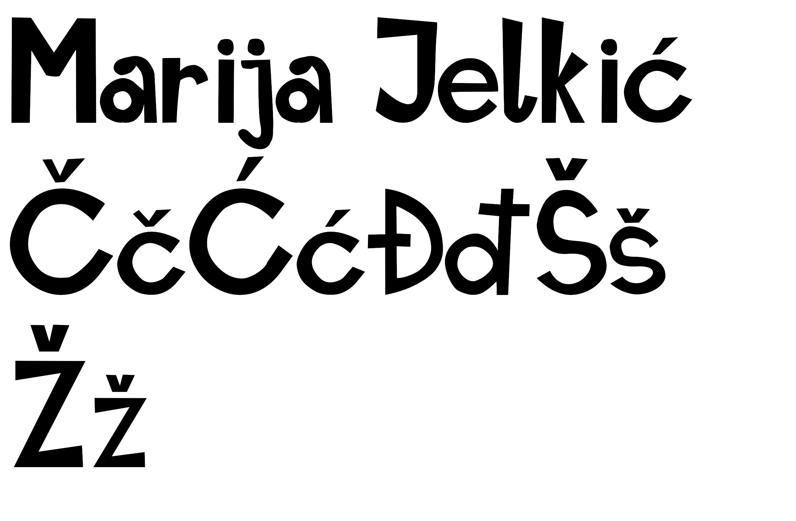Koordinatni sustav, Bezierova krivulja
U ovoj vježbi sam koristeći font iz prošle vježbe preko krivulja ispisala vlastite inicijale i iz njih napravila masku.
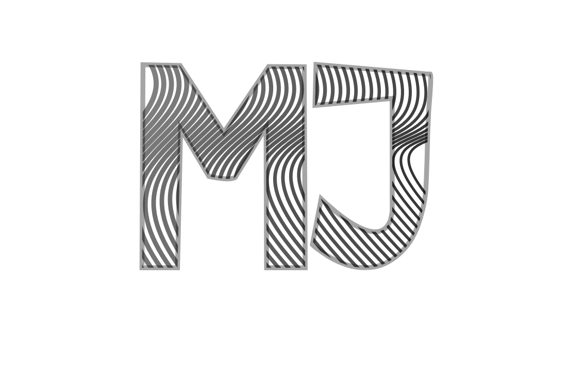Sustavi boja, transformacije, dupliciranje, grupiranje
U ovoj vježbi napravila sam vlastiti primjer koristeći se tehnikama koje sam naučila, a to su sustavi boja, transformacije, dupliciranje te grupiranje objekata.
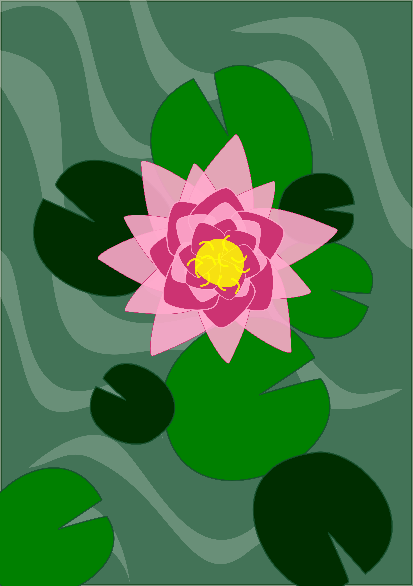Složeni objekti, gradijenti
U ovoj vježbi sam izradila čašu koristeći se različitim vrstama gradijenata te dodavanjem i oduzimanjem staza kako bih napravila složeni objekt.
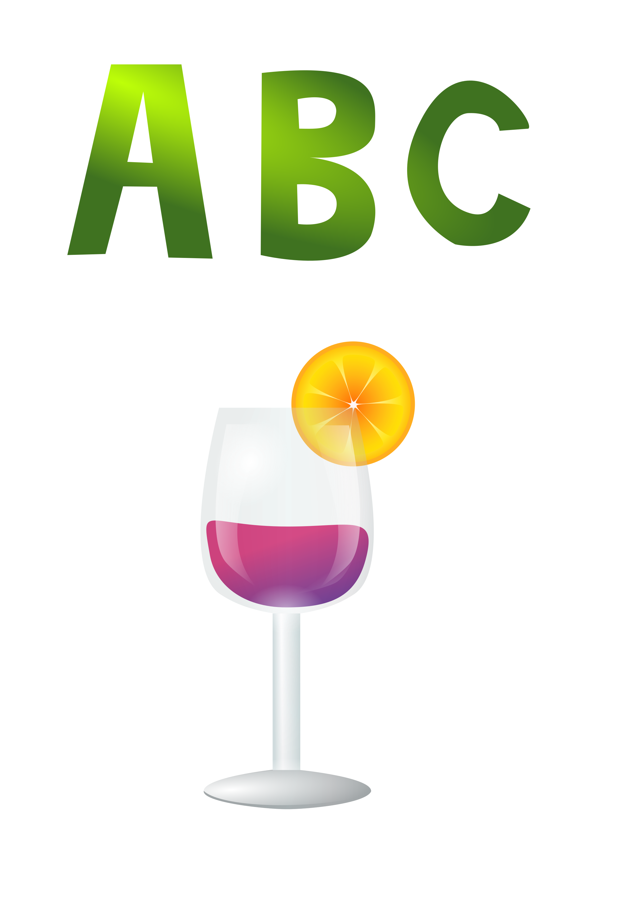Projetni zadatak 1
Koristeći sve elemente koje sam naučila u ovom setu vježbi, izradila sam svoj projektni zadatak.
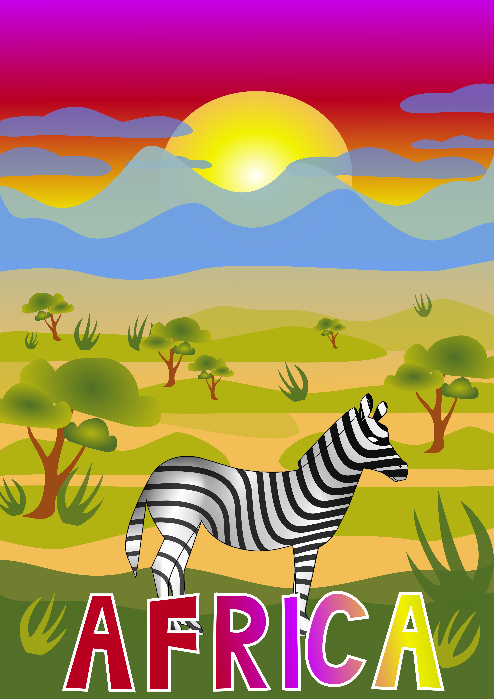Piksel grafika
Retuširanje
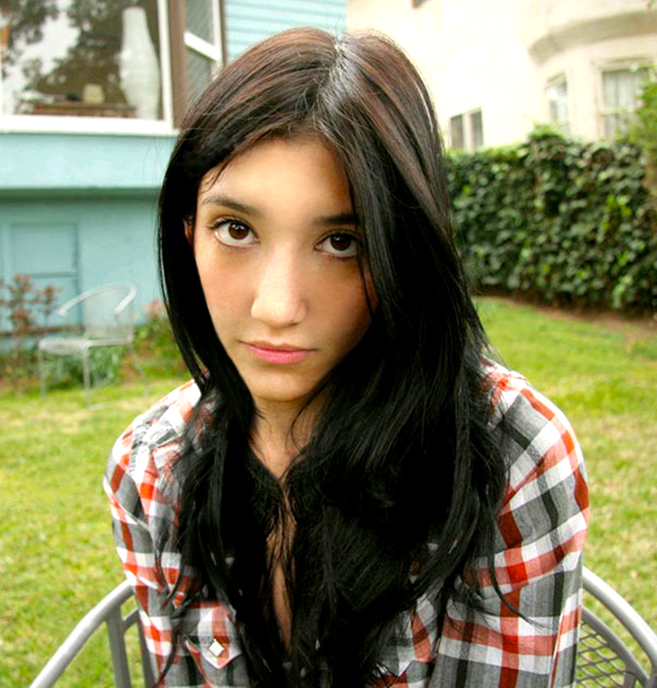 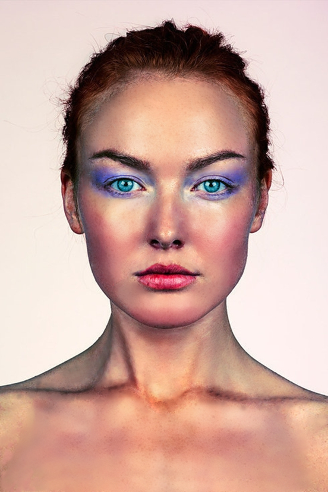Koloriranje
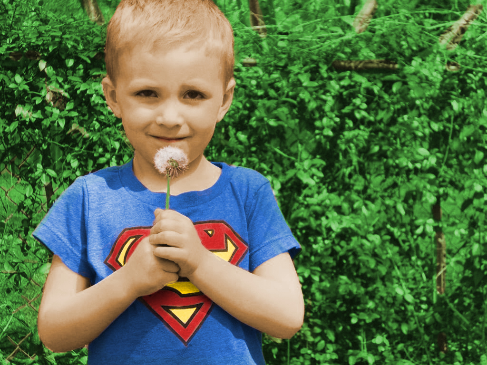 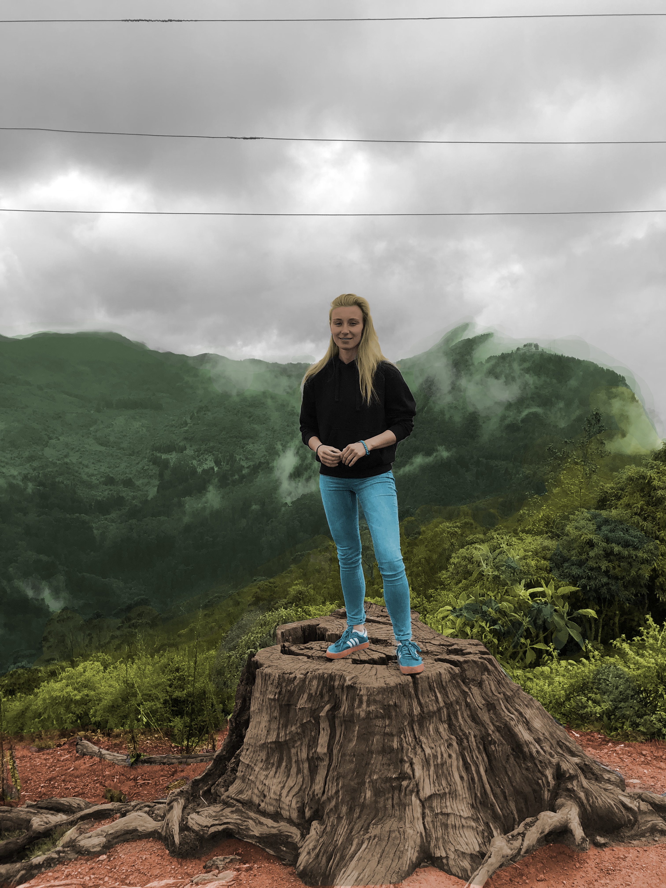Fotomontaža
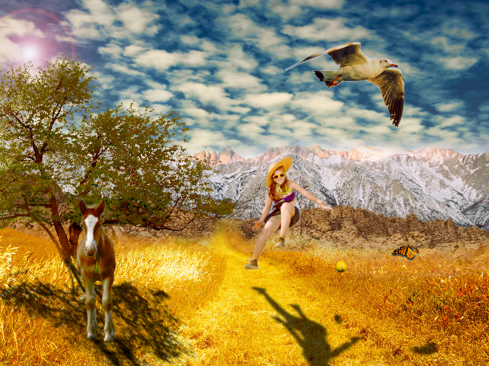Projektni zadatak 2
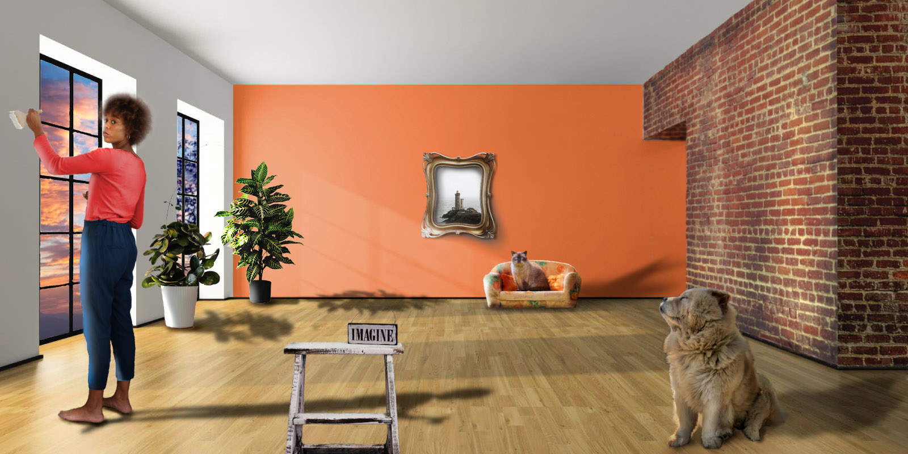Video/Web
Kinemagraf

Obrada videa, zvuka i efekti
U ovoj vježbi naučila sam izrezati i spajati video isječak, brisati i dodavati zvuk, dodavati razne efekte te statičan i dinamičan tekst.
HTML/CSS
U ovoj vježbi upoznali smo se s osnovama koda u HTML-u i CSS-u te kako pomoću njih stvoriti i urediti web sadržaj.
Webhosting i povezivanje
U ovoj posljednjoj vježbi koristili smo html stranice koje smo napravili na zadnjem predavanju i postavili ih na jendu od hosting stranica. Time su naše stranice postale javne. Također, koristili smo relativno povezivanje i sidrenje unutar stranica.
Povratak na vrh stranice